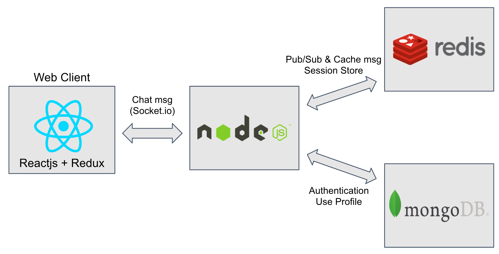

What is Node.js?
Node.js is an open source server environmentNode.js is free
Node.js runs on various platforms (Windows, Linux, Unix, Mac OS X, etc.)
Node.js uses JavaScript on the server
Node.js uses asynchronous programming!
What is a Module in Node.js?
Consider modules to be the same as JavaScript libraries.A set of functions you want to include in your application.
Node.js has a built-in module called HTTP, which allows Node.js to transfer data over the Hyper Text Transfer Protocol (HTTP).
The Built-in HTTP Module:
To include the HTTP module, use the require() method
Node.js as a Web Server:
The HTTP module can create an HTTP server that listens to server ports and gives a response back to the client.Use the createServer() method to create an HTTP server
Node.js as a File Server
The Node.js file system module allows you to work with the file system on your computer.To include the File System module, use the require() method
Common use for the File System module:
(1)Read files (2)Create files(3)Update files
(4)Delete files
(5)Rename files
Read Files
The fs.readFile() method is used to read files on your computerCreate Files
The File System module has methods for creating new files: (i)fs.appendFile()(ii)fs.open()
(iii)fs.writeFile()
(iv)The fs.appendFile() method appends specified content to a file. If the file does not exist, the file will be created
Update Files
The File System module has methods for updating files: (i)fs.appendFile()(ii)fs.writeFile()
The fs.appendFile() method appends the specified content at the end of the specified file
Delete Files
To delete a file with the File System module, use the fs.unlink() method. The fs.unlink() method deletes the specified fileRename Files
To rename a file with the File System module, use the fs.rename() method. The fs.rename() method renames the specified file
